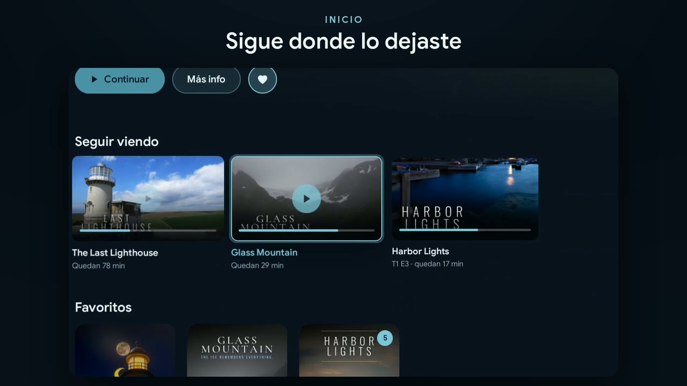
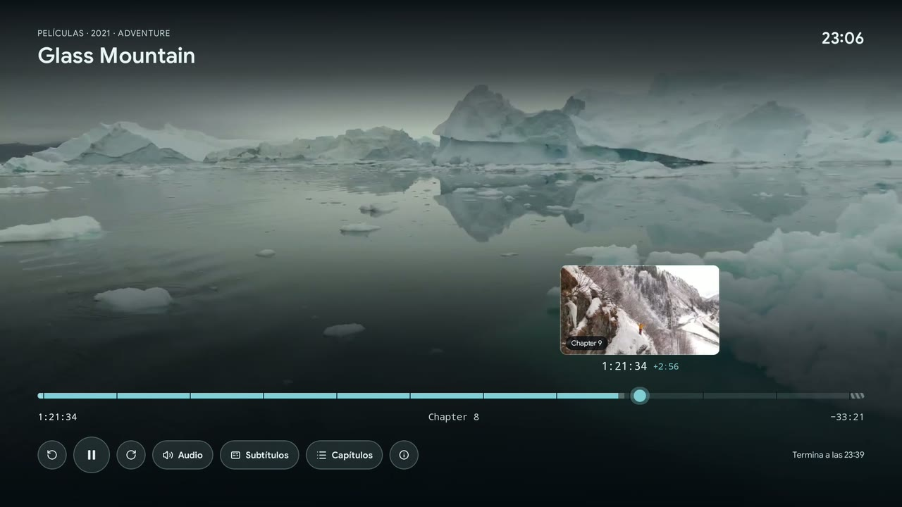
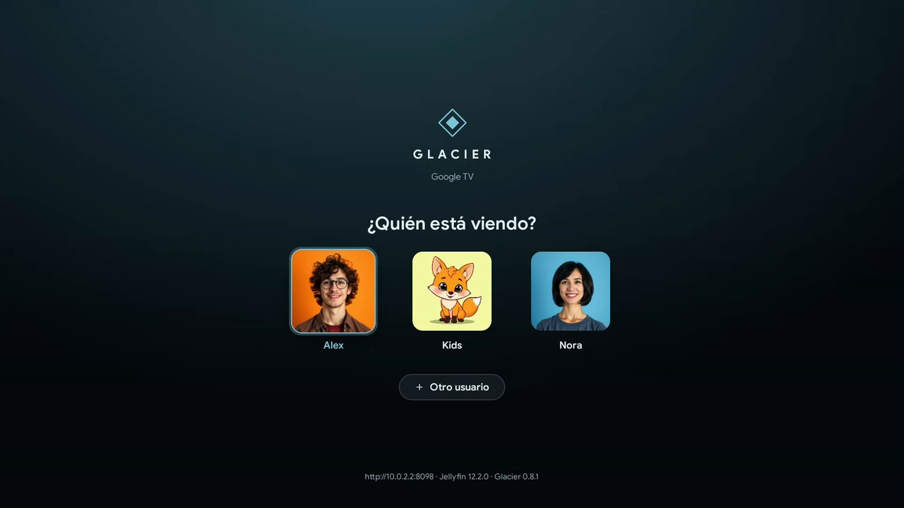
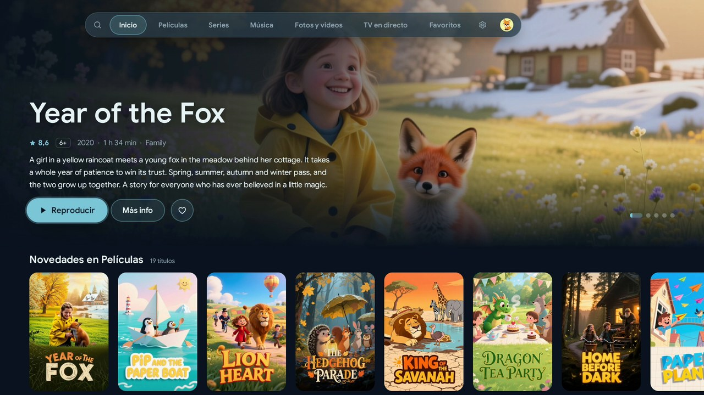
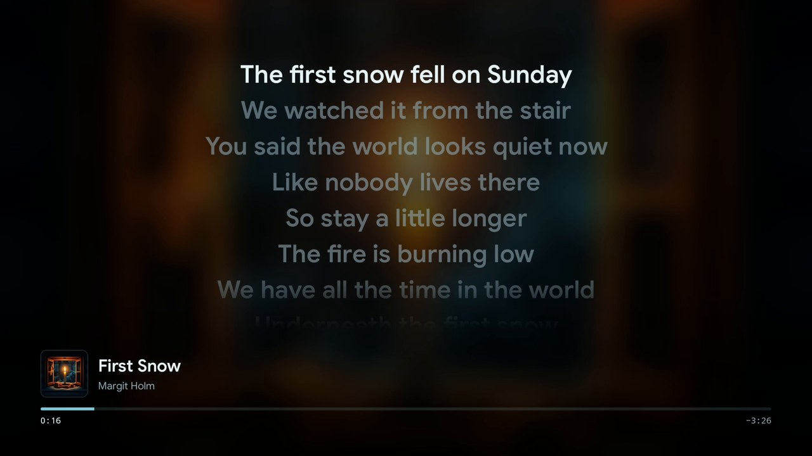
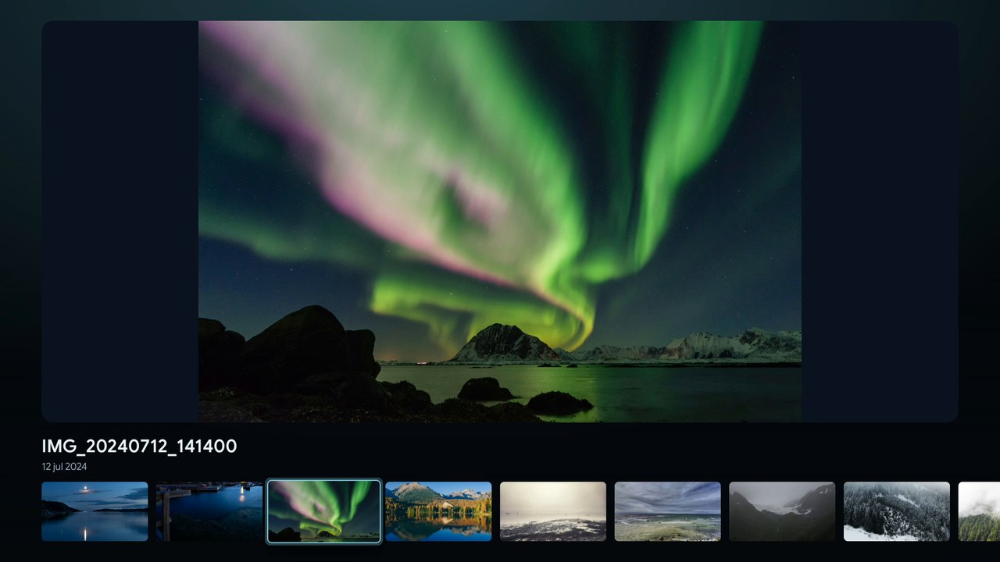
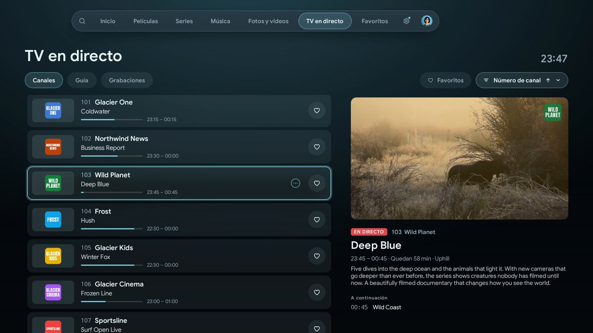
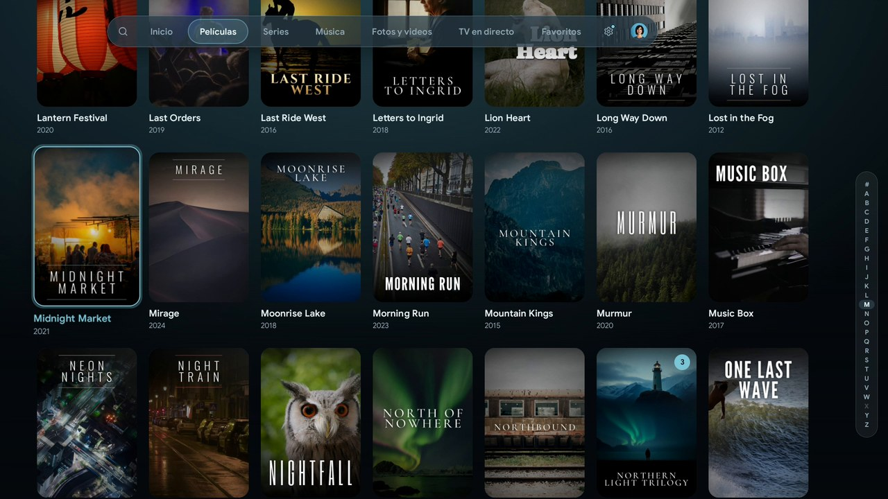
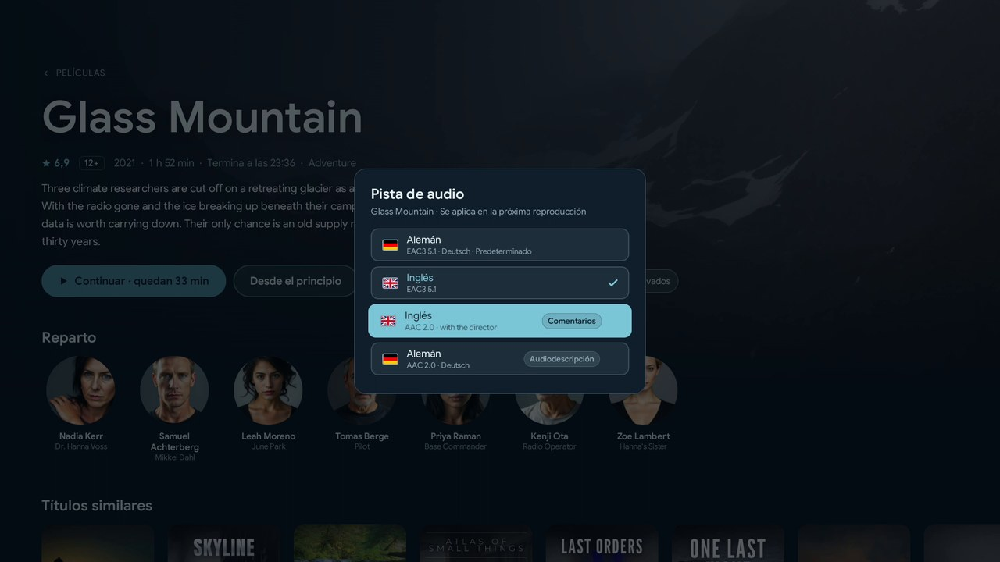

La tele vuelve a ser tuya.
Glacier lleva tu servidor Jellyfin al salón. Coge el mando y pulsa unas teclas.
Gratis para Android TV, Google TV y Fire TVPruébalo
Coge el mando y pulsa una tecla. La tele te sigue.

Pulsa las teclas.
Las flechas también funcionan.
Qué hace distinto a Glacier
Tres cosas del salón que Glacier cuida de manera especial.
Para el equipo bajo la tele
TrueHD y DTS-HD llegan al receptor tal como están en el disco, también donde Android solo deja pasar el núcleo DTS o no puede con TrueHD.
Y si nada pasa: E-AC-3, para que se mantenga el sonido envolvente.

Para la tele misma
Dolby Vision también desde UHD Blu-ray con perfil 7, convertido en el propio dispositivo. La tele cambia a la frecuencia de imagen de la película. Antes, Glacier comprueba con archivos de prueba reales qué puede reproducir.
Ajustes › Sistema › Comprobar la reproducción
Para todos en el sofá
Cada uno tiene su perfil con imagen, color y su propio progreso. El perfil infantil solo muestra lo que va con su edad, y el PIN se introduce con las flechas. ¿Tele nueva? Los ajustes se vienen con ella.
Un cojín por perfil.


Las ocho de la tarde, todos al sofá.
¿Quién está viendo? La pequeña elige el zorro y solo ve lo que va con ella. Después recuperas tu serie justo donde te quedaste dormido ayer.
La estantería de al lado
Música, fotos y televisión en la misma app, con el mismo mando.

Música
Letras grandes y al ritmo, videoclips en medio de la cola. Mientras navegas se queda el minirreproductor.

Fotos y videos caseros
Por carpetas, como galería o a pantalla completa. Con OK empieza la presentación del verano pasado.

TV en directo
Elige un canal y la vista previa ya está en marcha. Con guía de programación, grabaciones, pausa y retroceso.
La letra pequeña del tablón
Los detalles que hacen que una app viva bien con toda la casa.

Las bibliotecas grandes se abren rápido
Buscar y solicitar
La búsqueda también encuentra películas y series que aún no están en tu servidor. Las solicitudes van a través de Seerr directamente desde la tele, con el plugin Jellyfin Enhanced.
Versiones de un título
2160p y 1080p o el montaje del director: Glacier elige la adecuada para tu tele.
En la pantalla de inicio
Seguir viendo y tres canales opcionales en la pantalla de inicio de Android TV. No en Fire TV.

Cada pista de audio con un nombre claro
Siempre al día
Desde la tienda, Glacier se actualiza como cualquier app. Desde GitHub, el actualizador integrado trae versiones estables o beta.
Dos minutos en el salón
De la pantalla de inicio a la TV en directo. Sube el volumen.
Música: “Inspired” de Kevin MacLeod (incompetech.com), con licencia CC BY 4.0.
Downloader code
2423112
¡no lo tires!
En la tele en dos minutos
- Instala la app gratuita Downloader desde la tienda de apps de la tele.
- Ábrela, escribe el código y permite la instalación.
- Listo. A partir de ahora Glacier se mantiene al día solo.
Gratis, sin cuenta y sin anuncios, desde Android 9. ¿Prefieres la tienda?
Ayuda a llevar Glacier a Google Play
Google solo publica apps de cuentas de desarrollador privadas nuevas tras una prueba cerrada con al menos 12 testers durante 14 días. Si tienes un Android TV o un Google TV, puedes ser uno de ellos.
- Únete al grupo de testers con la cuenta de Google de tu tele.
- Con la misma cuenta, participa en la prueba.
- Abre Play Store en la tele e instala Glacier. Puede tardar unos minutos en aparecer.